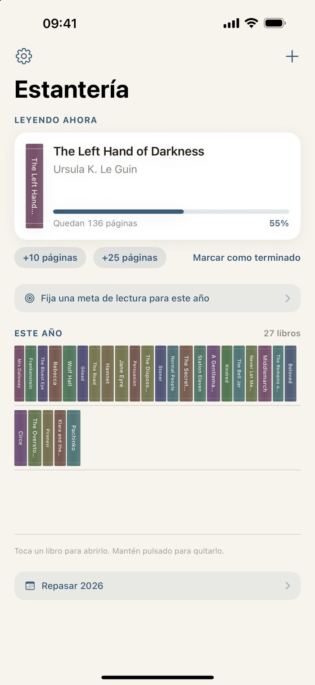
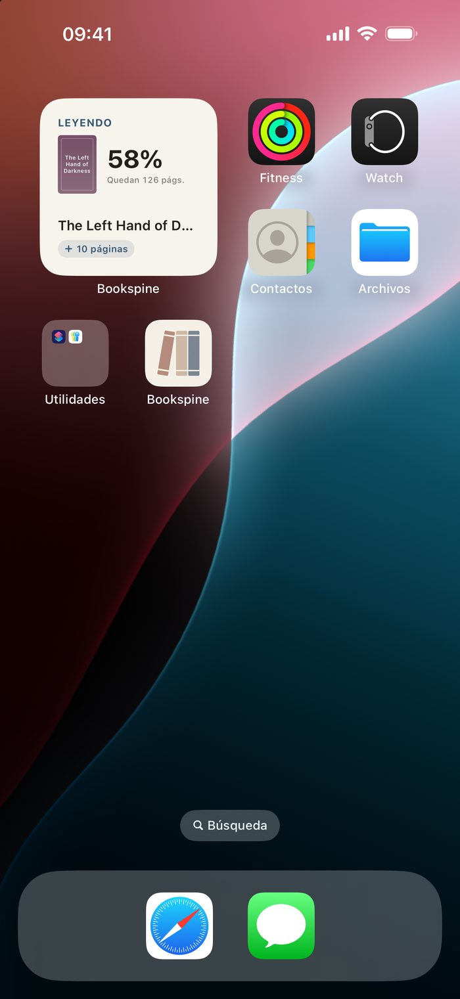

Cómo poner el libro que estás leyendo en la pantalla de inicio del iPhone
Un widget de lectura deja el libro que tienes a medias donde miras muchas veces al día: la portada, cuánto llevas y cuántas páginas te quedan.
Así se configura uno con Bookspine. El widget pequeño es gratis.
1. Añade el libro que estás leyendo
Abre Bookspine y toca +.
Busca por título o autor, o escanea el código de barras de la contraportada. El título, el autor y la portada se rellenan solos.
El libro pasa a “Leyendo ahora”.

¿Sin código de barras o sin resultados? Añádelo a mano: solo hace falta el título.
2. Pon el widget en la pantalla de inicio
Mantén pulsada una zona vacía de la pantalla de inicio hasta que las apps se muevan.
Toca Editar (o +) en la esquina superior y luego busca “Bookspine”.
Elige el tamaño pequeño y toca Añadir widget.

3. Añade páginas desde el propio widget
Toca “+10 páginas” en el widget mientras lees. No hace falta abrir la app. Cuando llegas a la última página, el libro se marca como terminado y pasa a tu estantería.
¿Quieres más en la pantalla de inicio?
Con Bookspine Pro (una compra única, no una suscripción):
Mediano: la portada, una barra de progreso, las páginas que faltan y los libros leídos este año
Grande: la estantería de este año, con todos los libros que has terminado en fila
Pantalla bloqueada: tu progreso sin desbloquear
Preguntas
¿El widget de lectura es gratis?Sí. El widget pequeño —el libro que estás leyendo, su portada o su lomo, y cuánto llevas— es gratis, sin anuncios y sin cuenta. Los widgets mediano, grande y de la pantalla bloqueada forman parte de Bookspine Pro, una compra única.
Estoy leyendo dos libros. ¿Cuál aparece?El widget pequeño muestra el libro que empezaste más recientemente.
¿Y si el libro no tiene número de páginas?Puedes añadirlo igual: solo hace falta el título. El progreso se guarda entonces en porcentaje, y cada toque en el widget suma un 5 %.
¿Qué pasa cuando llego a la última página?El libro se marca como terminado y pasa a tu estantería, donde los libros terminados se alinean en el orden en que los leíste.